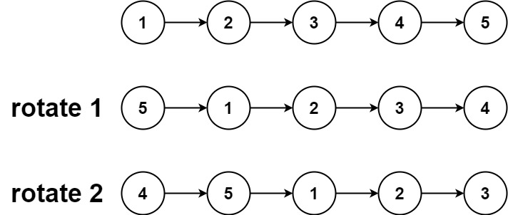

books / company-solutions / Linked List
61. 旋转链表
| 题目信息 | 内容 |
|---|---|
| 难度 | 中等 |
| 核心模式 | 先成环再断环：连成环后定位新尾节点并断开 |
| 时间复杂度 | O(n) |
| 空间复杂度 | O(1) |
题目与约束
给你一个链表的头节点 head ，旋转链表，将链表每个节点向右移动 k 个位置。
示例 1：

输入：head = [1,2,3,4,5], k = 2
输出：[4,5,1,2,3]
示例 2：

输入：head = [0,1,2], k = 4
输出：[2,0,1]
提示：
-
链表中节点的数目在范围
[0, 500]内 -
-100 <= Node.val <= 100 -
0 <= k <= 2 * 109
核心不变量
向右旋转
k位等价于把链表后k mod n个节点整体搬到前面；把尾节点接回头部形成环后，"新头"就在从头数第n - (k mod n)个节点处，"新尾"紧邻其左侧。
完整推导
思路推导
- 直觉与痛点（
k可能比长度大很多）
k 最大到 2×10⁹，显然不能真的旋转 k 次。注意到旋转 n 次会回到原样，所以只需真正旋转 k mod n 次；若 k mod n == 0，直接返回原链表。
- 破局思路（成环 + 找新尾再断）
先遍历一遍求出长度 n 并拿到尾节点 tail。把 tail.next = head，整条链表变成一个环。此时"向右旋转 k 位"就变成"从某个位置把环剪开"：
- 新头是原来的倒数第
k个节点，也就是从头数正数第n - k + 1个（1 基）； - 新尾是它的前一个，即从头数第
n - k个（1 基）。用 0 基就是从头走n - k - 1步。
小例子 [1,2,3,4,5], k=2：n=5，新头是倒数第 2 个 4，新尾是它前一个 3。成环后从 1 走 5-2-1=2 步到 3，把 3.next 断开，新头变成 4，得到 [4,5,1,2,3]。
- 关键追问（边界怎么处理？）
空链表或只有一个节点时无需旋转，直接返回；k % n == 0 时也不需要动，直接返回原头，避免把环剪回自己身上造成自环。
- 收尾：断环后返回新头即可，全程只改变指针指向，不复制节点。
Java 实现（rotateRight）
/**
* Definition for singly-linked list.
* public class ListNode {
* int val;
* ListNode next;
* ListNode() {}
* ListNode(int val) { this.val = val; }
* ListNode(int val, ListNode next) { this.val = val; this.next = next; }
* }
*/
class Solution {
public ListNode rotateRight(ListNode head, int k) {
// 空链表或单节点无需旋转
if (head == null || head.next == null) {
return head;
}
// 1. 求链表长度，并定位尾节点
int n = 1;
ListNode tail = head;
while (tail.next != null) {
tail = tail.next;
n++;
}
// 2. 实际只需旋转 k % n 位
k %= n;
if (k == 0) {
return head;
}
// 3. 成环：尾节点接回头部
tail.next = head;
// 4. 新尾是从头走 n - k - 1 步的节点，新头是它的下一个
ListNode newTail = head;
for (int i = 0; i < n - k - 1; i++) {
newTail = newTail.next;
}
ListNode newHead = newTail.next;
newTail.next = null; // 断环
return newHead;
}
}
复杂度
- 时间：O(n)。第一遍遍历求长度、第二遍走到新尾，各 O(n)，合计 O(n)。
- 空间：O(1)。只用了
tail / newTail / newHead / n / k等常数个指针变量。
易错点与扩展（面试高频考点）
- 忘记取模：
k可达2×10⁹，必须k %= n；否则循环步数会溢出甚至死循环。 k % n == 0的提前返回：此时结构不变，若不返回会导致成环后仍去剪，逻辑出错。- 新尾的步数：是
n - k - 1步（0 基），写成n - k会多走一步，新头错位。 - 空/单节点保护：
head == null || head.next == null必须先判，否则tail.next访问可能出问题。 - 扩展——旋转数组（LeetCode 189）：数组同样可以"三次反转"实现 O(1) 空间旋转，思路上的"取模 + 分段搬运"与链表一致，可对比记忆。
力扣原题
C++ 实现
/**
* Definition for singly-linked list.
* struct ListNode {
* int val;
* ListNode *next;
* ListNode() : val(0), next(nullptr) {}
* ListNode(int x) : val(x), next(nullptr) {}
* ListNode(int x, ListNode *next) : val(x), next(next) {}
* };
*/
class Solution {
public:
ListNode* rotateRight(ListNode* head, int k) {
if (head == nullptr || head->next == nullptr) {
return head;
}
// 1. 求长度并找到尾节点
int n = 1;
ListNode* tail = head;
while (tail->next != nullptr) {
tail = tail->next;
n++;
}
// 2. 只需旋转 k % n 位
k %= n;
if (k == 0) {
return head;
}
// 3. 成环
tail->next = head;
// 4. 走到新尾（n - k - 1 步），断开
ListNode* newTail = head;
for (int i = 0; i < n - k - 1; i++) {
newTail = newTail->next;
}
ListNode* newHead = newTail->next;
newTail->next = nullptr;
return newHead;
}
};
Python 实现
# Definition for singly-linked list.
# class ListNode:
# def __init__(self, val=0, next=None):
# self.val = val
# self.next = next
class Solution:
def rotateRight(self, head: "ListNode | None", k: int) -> "ListNode | None":
if not head or not head.next:
return head
# 1. 求长度并定位尾节点
n = 1
tail = head
while tail.next:
tail = tail.next
n += 1
# 2. 实际只需旋转 k % n 位
k %= n
if k == 0:
return head
# 3. 成环
tail.next = head
# 4. 新尾从头走 n - k - 1 步，新头是它的下一个
new_tail = head
for _ in range(n - k - 1):
new_tail = new_tail.next
new_head = new_tail.next
new_tail.next = None # 断环
return new_head